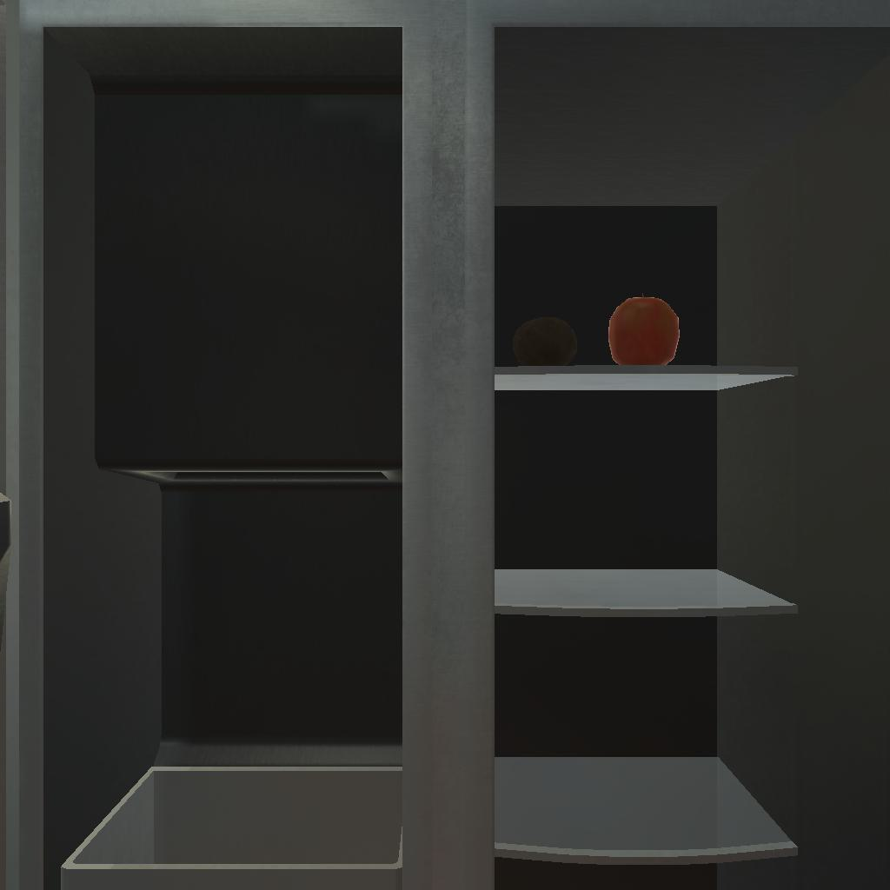

---------------------------------------------------------task: 12---------------------------------------------------------
--------------------------------------------------------------------------------------------------------------------------------------------------------------------
--------------------------------------------------------------------------------------------------------------------------------------------------------------------
Step:--------------------------------------------------------------------------10-------------------------------------------------------------------------------
----------------------------------------
VLM Prompt:
Image1:
Image2:
Image3:
**Instruction**
1. Analyze the provided images to identify all visible household objects and compare the difference between images (e.h. whether the object is opened or not and taken on hand or not), focusing on those relevant to the task description "clean some tomato and put it in countertop."
2. Use the analysis of images and the task hint "The agent must find an object of the desired type, pick it up, go to a sink or a basin, clean the object with a sink or basin, and then find the correct location to place it and put it down there. The agent does not need to use soap bottle or faucet to clean the object, and the agent just needs to do action that is "clean the object with the sink or sink basin"." to answer the question: what is the most reasonable action in the choices for the task description "clean some tomato and put it in countertop"?
3. Decide and write the answer using the template: The answer is: (i): , where i is the real number. If there is no desired object in images, search every place based on **Initial Observation** to find the object. And if no one is exactly correct, choose a similar answer.
**Initial Observation**
You are in the middle of a room. Looking quickly around you, you can see cabinet (1-6), microwave (1), countertop (1-2), coffeemachine (1), toaster (1), sink (1), sinkbasin (1), fridge (1)
**Answer Choices**
(1): go to cabinet 2
(2): go to cabinet 3
(3): go to microwave 1
(4): go to cabinet 4
(5): go to cabinet 5
(6): go to cabinet 6
(7): go to countertop 1
(8): go to coffeemachine 1
(9): go to toaster 1
(10): go to countertop 2
(11): go to sink 1
(12): go to sinkbasin 1
(13): close fridge 1
(14): take apple 1 from fridge 1
(15): take potato 1 from fridge 1
(16): examine fridge 1
**Answer**
Let's think step by step by following the instructions.
----------------------------------------
----------------------------------------
Original Response:
Image Analysis:
- Image 1 shows a cabinet with closed doors. No objects are visible.
- Image 2 and Image 3 are the same, showing a fridge with an open door, a dark interior, and a shelf with an apple and a potato on it.
Based on the task description "clean some tomato and put it in countertop," the agent needs to find a tomato, clean it, and place it on the countertop. None of the images show a tomato, so the agent will need to search for it.
Initial Observation:
The description mentions a cabinet, microwave, countertop, coffeemachine, toaster, sink, sinkbasin, and fridge. Since the tomato is not visible in the fridge or on the countertop and the task involves cleaning, the most likely place to find and clean the tomato would be near the sink or sinkbasin.
The answer is: (12): go to sinkbasin 1.
----------------------------------------
----------------------------------------
>>> Refine Original VLM Response and Get Pure Action: go to sinkbasin 1
----------------------------------------
-----------------------------------------------------------------
Running time: 8.253540992736816 seconds
Total Money: 6.588590000000007
-----------------------------------------------------------------
-----------------------------------------------------------------
Text Observation:You arrive at loc 12. On the sinkbasin 1, you see a faucet 1, and a plate 1.
-----------------------------------------------------------------
UNSUCCEED